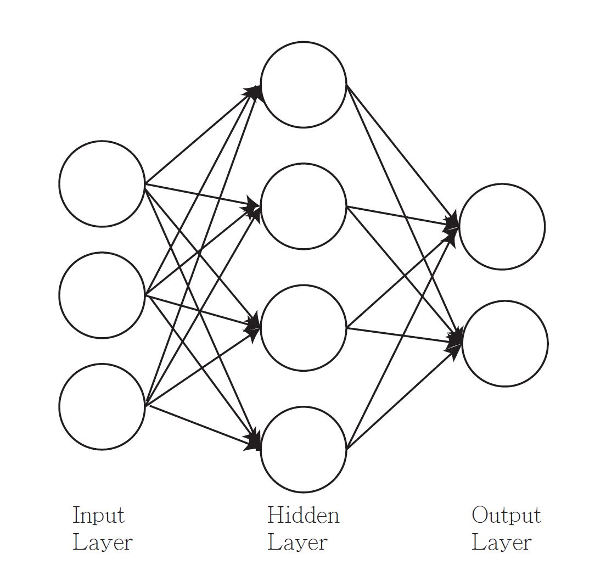
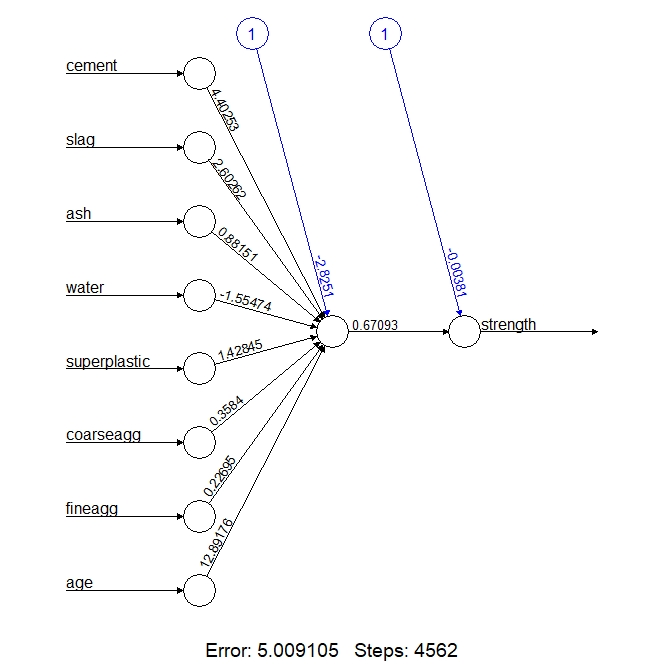
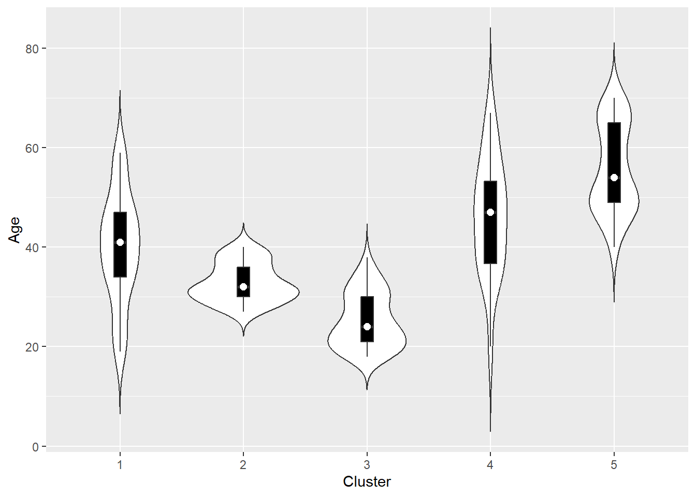
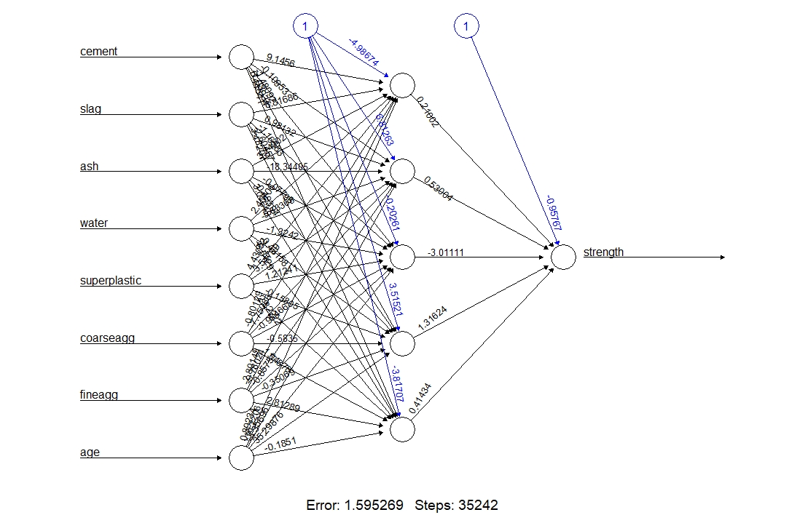
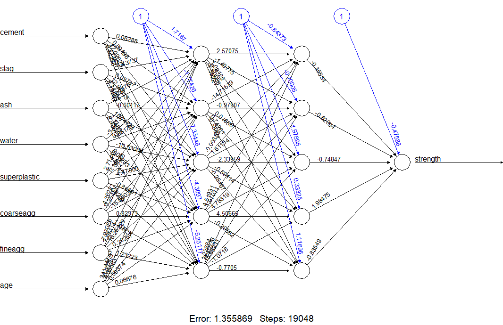
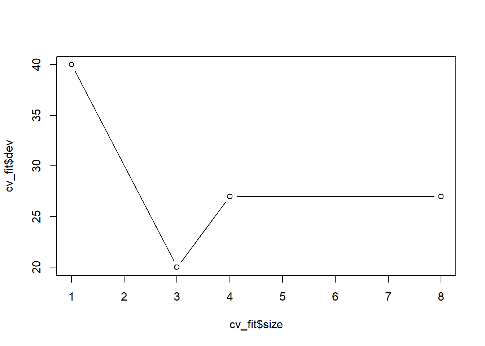
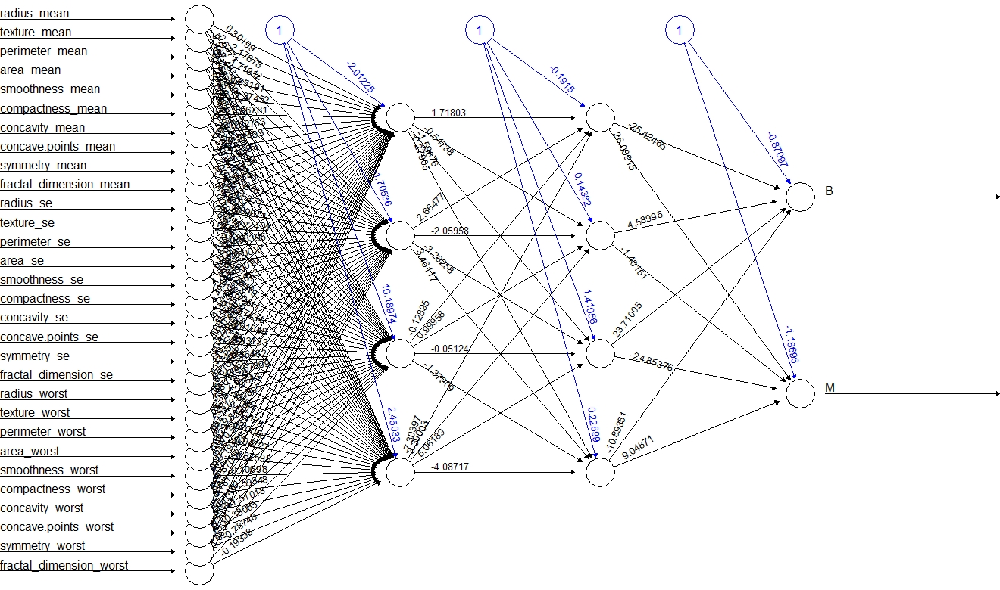

Chapter 16 Neural Networks
Optional Reading: Chapter 7 in Machine Learning with R by Brett Lantz
Packages used:
16.1 Introduction
An artificial neural network (ANN) (or simply neural network) models the relationship between a set of input signals and output signals using a model derived from our understanding of how a biological brain responds to stimuli from sensory inputs.
The human brain is made up of about \(85\) billion neurons. A neuron is an electrically excitable cell that communicates with other cells via specialized connections called synapses. ANNs contain far fewer artificial neurons (units).
A neural network is simply a nested nonlinear model.
Neural network can be used for regression and classification.
- For regression, we can have more than one output unit (response).
- For classification, we have \(K\) output units. Each unit models the probability of class \(k\) for \(k=1,\ldots,K\). We can code our class label as \(K\) \(0-1\) variables. For example, if you have \(3\) classes “a”, “b” and “c”. Then, we \((Y_1, Y_2, Y_3) = (1, 0, 0)\) if the class label is “a”, \((Y_1, Y_2, Y_3) = (0, 1, 0)\) if the class label is “b”, \((Y_1, Y_2, Y_3) = (0, 0, 1)\) if the class label is “c”.
The following figure shows a single hidden layer feedforward neural network. It is also an example of a 2-layer neural network (one hidden layer + one output layer, the input layer is not counted as a layer).

Suppose we have \(p\) features \(X_1,\ldots,X_p\), one hidden layer with \(J\) hidden units and \(K\) outputs \(Y_1,\ldots,Y_K\).
Input layer: the units are the features \(X_1, X_2,\ldots, X_p\).
Hidden layer: for \(j=1,\ldots,J\), \[\begin{equation*} h_j(X) = f \bigg(v_{j0} + \sum^p_{i=1} v_{ji} X_i\bigg). \end{equation*}\] The units in the hidden layer are called hidden units because the values are not directly observed.
Output layer: for \(k=1,\ldots,K\), \[\begin{equation*} o_k(X) = g\bigg(w_{k0} + \sum^J_{j=1} w_{kj} h_j(X) \bigg). \end{equation*}\] The \(o_K(X)\)’s are the predictions of \(Y_k\)’s.
\(v_{ji}\)’s and \(w_{kj}\)’s are the unknown weights to be estimated.
\(f\) and \(g\) are the activation functions.
Each unit computes its value based on linear combination of values of units that point into it, and an activation function.
Deep neural network = neural network with multiple hidden layers
Deep learning = the practice of training deep neural networks
\(3\) characteristics of neural networks:
Activation function: transforms a neuron’s net input signal into a single output signal to be broadcasted further in the network. Activation function allows the neural network to approximate nonlinear function. Without nonlinearities, the neural network would be linear, no matter how many layers it has.
Network topology (or architecture): describes the number of neurons in the model as well as the number of layers and manner in which they are connected.
Training algorithm: specifies how connection weights are set in order to inhibit or excite neurons in proportion to the input signal
Activation functions
For regression, we typically choose the identity function for the output function. That is, \(g(x) = x\).
For classification, we can use the logistic function or the softmax function for the output function which returns a value between \(0\) and \(1\).
Different activation function may fit certain types of data more appropriately.
Some common activation functions:
- Logistic sigmoid \(f(x) = \frac{1}{1+e^{-x}}\). Range = \((0, 1)\)

- tanh \(f(x) = \frac{e^x - e^{-x}}{e^x + e^{-x}}\). Range = \((-1, 1)\).

- Rectified Linear Unit (ReLU) \(f(x) = x I(x \geq 0)\). Range = \([0, \infty)\).

Network typology
\(3\) key characteristics:
The number of layers
Single-layer network
Multilayer network: one or more hidden layers
Whether information in the network is allowed to travel backward
Feedforward network: input signal is fed in one direction from the input layer to the output layer
Recurrent network (or feedback network): allows signals to travel backward using loops
The number of nodes within each layer of the network
Number of input nodes = number of features
Number of hidden nodes = user decide prior to training the model
Number of output nodes = number of outcomes to be modeled or the number of class levels in the outcome
In general, using a larger number of neurons will fit the training data better, but this runs a risk of overfitting (generalize poorly to future data). It can also take more time to train the model.
Training the model
For regression, the loss function is the sum-of-squared errors: \[\begin{equation*} L(\theta) = \frac{1}{2} \sum^K_{k=1} \sum^N_{i=1} (y_{ik} - o_k(x_i))^2. \end{equation*}\] Here \(x_i\) is a vector of features for the \(i\)th example and \((y_{i1},\ldots,y_{iK})\) is the vector of outputs. \(o_k(x_i)\) is the prediction of \(y_{ik}\). \(\theta\) is the collection of all the weights.
For classification, we use either sum-of-squared errors or cross-entropy. The cross-entropy is defined as \[\begin{equation*} L(\theta) = - \sum^N_{i=1} \sum^K_{k=1} y_{ik} \log o_k(x_i). \end{equation*}\]
The generic approach to minimizing \(L(\theta)\) is by gradient descent, called back-propagation in this setting using the chain rule for differentiation. We will not go into the detail of this method.
16.2 Regression: Predict the Strength of Concrete
In engineering, it is crucial to have accurate estimates of the performance of building materials. These estimates are required in order to develop safety guidelines governing the materials used in the construction of buildings, bridges, and roadways.
Estimating the strength of concrete is a challenge of particular interest. Although it is used in nearly every construction project, concrete performance varies greatly due to a wide variety of ingredients that interact in complex ways. As a result, it is difficult to accurately predict concrete strength of the final product. A model that could reliably predict concrete strength given a listing of the composition of the input materials could result in safer construction practices.
16.2.1 Data
We will use the data donated to the UCI Machine Learning Repository by I-Cheng Yeh. https://archive.ics.uci.edu/ml/datasets/concrete+compressive+strength
Description of the data:
Concrete is the most important material in civil engineering. The concrete compressive strength is a highly nonlinear function of age and ingredients. These ingredients include cement, blast furnace slag, fly ash, water, superplasticizer, coarse aggregate, and fine aggregate.
The actual concrete compressive strength (MPa) for a given mixture under a specific age (days) was determined from laboratory. Data is in raw form (not scaled).
Import the Data
concrete <- read_csv("C:/Queens Teaching/Teaching/STAT 362/08_datasets/concrete.csv")
concrete
## # A tibble: 1,030 x 9
## cement slag ash water superplastic coarseagg fineagg age strength
## <dbl> <dbl> <dbl> <dbl> <dbl> <dbl> <dbl> <dbl> <dbl>
## 1 540 0 0 162 2.5 1040 676 28 80.0
## 2 540 0 0 162 2.5 1055 676 28 61.9
## 3 332. 142. 0 228 0 932 594 270 40.3
## 4 332. 142. 0 228 0 932 594 365 41.0
## 5 199. 132. 0 192 0 978. 826. 360 44.3
## 6 266 114 0 228 0 932 670 90 47.0
## 7 380 95 0 228 0 932 594 365 43.7
## 8 380 95 0 228 0 932 594 28 36.4
## 9 266 114 0 228 0 932 670 28 45.8
## 10 475 0 0 228 0 932 594 28 39.3
## # ... with 1,020 more rowsWe have \(8\) features and \(1\) outcome.
Neural networks work best when the input data are scaled to a narrow range around zero. We discussed feature scaling when we discuss \(k\)-NN. Here, we will normalize the data.
Before we normalize the data, we will separate the our data into a training dataset and a testing dataset. We will use \(75\%\) of the data to form our training dataset and the rest to form our testing dataset.
set.seed(362)
random_index <- sample(nrow(concrete), size = nrow(concrete) * 0.75)
concrete_train <- concrete[random_index, ]
concrete_test <- concrete[-random_index, ]Normalize the data
Define a function to normalize our training data and testing data.
normalize <- function(train, test) {
train_n <- train
test_n <- test
train_min <- apply(train, 2, min)
train_max <- apply(train, 2, max)
for (i in 1:ncol(train)) {
train_n[, i] <- (train[, i] - train_min[i]) / (train_max[i] - train_min[i])
# use the min and max from training data to normalize the testing data
test_n[, i] <- (test_n[, i] - train_min[i]) / (train_max[i] - train_min[i])
}
return(list(train = train_n, test = test_n))
}Apply the normalize function:
16.2.2 Training a model
We will train a multilayer feedforward neural network using the function neuralnet() in the package neuralnet.
Usage of the function:
formula: same as the formula used inlm(), e.g.,strength ~ .andstrange ~ cement + slag.hidden: the number of neurons in the hidden layer (by default, \(1\) hidden layer with \(1\) neuron). To use \(2\) hidden layers with \(3\) and \(4\) neurons, sethidden = c(3, 4).act.fct: the activation function. The default is to use the logistic function.
# The default is to use one hidden layer with one unit
# you get slightly different results each time because of the random initial values
# set the seed to reproduce the result
set.seed(1)
concrete_ANN <- neuralnet(strength ~ ., data = concrete_train_n)Visualize the network (for learning and teaching purpose):

The numbers on the arrows are the weights.
The additional \(1\) is the bias term (recall that in linear regression we always include the intercept too).
16.2.3 Understanding the model
Now, let’s understand the model by computing the prediction manually. We will first define the logistic function.
Predicted values:
Step-by-step calculation:
# Extract the weights v_{ji}
weights <- concrete_ANN$weights[[1]][[1]][, 1]
# (1, X_1, X_2, ..., X_p)
features <- c(1, as.numeric(concrete_train_n[1, 1:8]))
# v_{j0} + sum v_{ji} X_i
linear_combination <- sum(weights * features)
# h_j(X) = f(v_{j0} + sum v_{ji} X_i) (J = 1 as we only have 1 hidden unit)
h_X <- logistic(linear_combination)
# Extract the weights w_{kj}
weights2 <- concrete_ANN$weights[[1]][[2]][, 1]
# o_K(X) = g(w_{k0} + sum w_{kj} h_j(X)), with g(x) = x
sum(c(1, h_X) * weights2)
## [1] 0.65817516.2.4 Evaluating the Performance
Prediction
Use the compute function:
# I used neuralnet::compute instead of compute because dplyr also contains a function called compute
prediction <- neuralnet::compute(concrete_ANN, concrete_test_n[, 1:8])
predicted_strength <- prediction$net.result[, 1]Scatterplot of predictions versus the true values.
plot_predict_1 <- ggplot(mapping = aes(x = concrete_test_n$strength, y = predicted_strength)) +
geom_point() +
labs(title = "Single Hidden Layer with 1 unit")
plot_predict_1
Since this is a numeric prediction problem rather than a classification problem, we cannot use a confusion matrix to examine model accuracy. Instead, we can use correlation to measure the performance of the prediction. The higher the correlation, the better the prediction is.
16.2.5 Improving the Model
One hidden layer with \(5\) units:
concrete_ANN_5 <- neuralnet(strength ~ ., data = concrete_train_n, hidden = 5)
prediction_5 <- neuralnet::compute(concrete_ANN_5, concrete_test_n[, 1:8])
predicted_strength_5 <- prediction_5$net.result[, 1]
cor(concrete_test_n$strength, predicted_strength_5)
## [1] 0.9092216
Two hidden layers, each with \(5\) units:
concrete_ANN_55 <- neuralnet(strength ~ ., data = concrete_train_n, hidden = c(5, 5))
prediction_55 <- neuralnet::compute(concrete_ANN_55, concrete_test_n[, 1:8])
predicted_strength_55 <- prediction_55$net.result[, 1]
cor(concrete_test_n$strength, predicted_strength_55)
## [1] 0.9274489
plot_predict_55 <- ggplot(mapping = aes(x = concrete_test_n$strength, y = predicted_strength_55)) +
geom_point() +
labs(title = "Two Hidden Layers, each with 5 units")
ggarrange(plot_predict_1, plot_predict_55)
16.3 Classification
We will use the breast cancer dataset to illustrate how to perform classification using neural networks.
The following datasets are normalized already with the output being (B, M). Download them in onQ.
wbcd_train_n <- read.csv("C:/Queens Teaching/Teaching/STAT 362/08_datasets/wisc_bc_train_normalize_01.csv")
wbcd_test_n <- read.csv("C:/Queens Teaching/Teaching/STAT 362/08_datasets/wisc_bc_test_normalize_01.csv")Train the model:
Set linear.output = FALSE to use the logistic function to get a predicted number between \(0\) and \(1\).
set.seed(1)
fit <- neuralnet(B + M ~ ., data = wbcd_train_n, hidden = c(4, 4),
linear.output = FALSE)3-layer feedforward neural network:

Evaluate the performance
Training Data:
Use max.col to find the column correspond to the maximum number.
# Training Data
# result
head(neuralnet::compute(fit, wbcd_train_n)$net.result)
## [,1] [,2]
## [1,] 5.310829e-14 1.000000e+00
## [2,] 1.000000e+00 3.221476e-12
## [3,] 1.000000e+00 2.943722e-12
## [4,] 4.879723e-15 1.000000e+00
## [5,] 2.869652e-07 9.999998e-01
## [6,] 1.000000e+00 1.947128e-12
# assign the class label according to the one with a larger number
predict <- max.col(neuralnet::compute(fit, wbcd_train_n)$net.result)
# first column is for B, second column is for M
predict <- recode(predict, "1" = "B", "2" = "M")
train_diagnosis <- recode(wbcd_train_n$B, "0" = "M", "1" = "B")
# Confusion Matrix for Training Data
table(train_diagnosis, predict)
## predict
## train_diagnosis B M
## B 298 0
## M 4 167Testing Data: